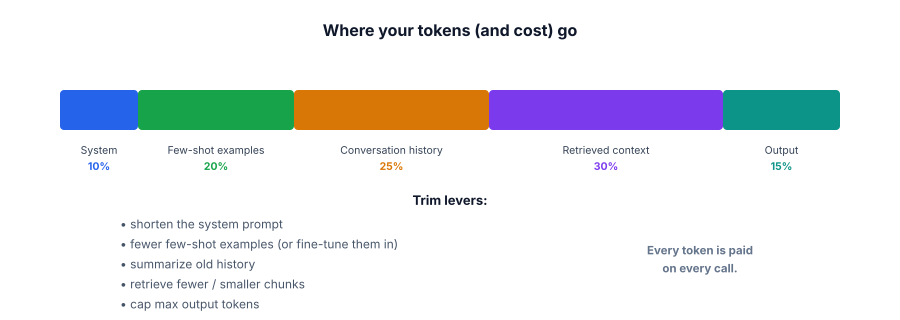

Budgeting tokens
Caching skips calls, routing right-sizes them, batching speeds the hardware — but every call you do make still spends tokens, on every request, forever. Token budgeting is the most universal lever: make each prompt as lean as it can be, and you pay less on literally every call.
Every token is paid, every time
Because cost and latency both scale with tokens (Lesson 8.1), the size of your prompt and answer is a per-request tax you pay endlessly. A bloated prompt — a giant system message, a dozen few-shot examples, an over-long conversation history, too much retrieved context — multiplies across every call and every user. Token budgeting is treating your token usage like a budget: knowing where the tokens go, and trimming the fat without losing quality.

A token budget is a deliberate accounting of how many tokens each part of your request uses: the system prompt, any few-shot examples, the conversation history, retrieved context (in RAG), and the output. You measure each part, find the biggest, and trim it — with levers like shortening instructions, using fewer examples (or fine-tuning them in), summarizing old history, retrieving less, and capping max output tokens.
Count each component so you know where to cut — guessing wastes effort on the wrong part.
import tiktoken
enc = tiktoken.get_encoding("cl100k_base")
def n(text): return len(enc.encode(text))
parts = {
"system": n(system_prompt),
"examples": sum(n(e) for e in few_shot),
"history": sum(n(m) for m in conversation),
"context": sum(n(c) for c in retrieved_chunks),
}
for name, count in sorted(parts.items(), key=lambda kv: -kv[1]):
print(f"{name}: {count} tokens") # attack the biggest first
# context: 2400 history: 1800 examples: 700 system: 250 → trim context + history
# Cheap wins:
# - cap output: max_tokens=300 (don't let it ramble)
# - trim history: keep last N turns + a running summary (Track 4.5)
# - retrieve less: top-3 instead of top-10, smaller chunks (Track 3)The measurement is the point: people often “optimize” the system prompt while a 2,400-token retrieved-context blob is the real cost. Measure first, cut the biggest, re-measure.
- Every token is paid on every call — prompt size is a per-request tax that multiplies at scale.
- Account for where tokens go (system, examples, history, context, output) and trim the biggest.
- Levers: shorter system prompt, fewer examples (or fine-tune them in), summarized history, leaner retrieval, capped output.
- Output tokens are doubly costly (price + decode latency) — cap them deliberately.
- Measure first — don’t trim the part that isn’t the problem.
Your costs are high. You spend an afternoon tightening the system prompt from 300 → 180 tokens, but the bill barely moves. A trace shows each call also sends 2,400 tokens of retrieved context and 1,800 of history. What should you have done?
You must cut cost on a chat feature. What's usually the biggest lever?
1. Why is capping max_tokens on the output a double win compared to trimming input?
2. Your agent’s cost grows over a long task. Which component is likely ballooning, and what fixes it?
3. You use 8 few-shot examples (1,000 tokens) on every call. Give two ways to reduce that cost.
▸ Show solutions & reasoning
1. Output tokens cost on both axes: they’re usually the higher-priced tokens and each one adds decode time (Lesson 8.1). So capping output saves money and latency, whereas trimming input mainly saves money and TTFT. (Trim both, but a runaway-length answer is especially worth capping.)
2. The conversation/agent history — each step re-sends a growing transcript, so input tokens climb every call (Lesson 8.1, Track 4.5). Fix it with memory management: keep the last few turns plus a running summary of older ones, and drop or retrieve-on-demand the rest, so the per-call token count stays bounded instead of growing without limit.
3. (a) Use fewer examples — test whether 3 well-chosen examples match 8’s quality (often they do), saving most of the 1,000 tokens per call. (b) Fine-tune the behavior in (Track 5): bake the examples’ pattern into the weights so you can drop them from the prompt entirely — a one-time training cost to stop paying 1,000 tokens on every single call. (Also: dynamic/retrieved few-shot, selecting only the most relevant example per query.)
Token budgeting feels small per call and is enormous in aggregate, which is exactly why it’s the most universally-applied serving optimization. Trim 500 tokens from a prompt that runs ten million times a month and you’ve saved five billion tokens a month, every month, on top of faster responses — and you did it once. This compounding is why disciplined teams keep prompts ruthlessly lean: it’s free money that recurs. It also reframes some earlier-track decisions through a cost lens: every few-shot example you add (Track 2) is a permanent per-call tax, which is one reason fine-tuning to shrink prompts (Track 5) can pay for itself; every extra retrieved chunk (Track 3) costs tokens forever, which is another reason to retrieve precisely rather than dumping context.
Two cautions keep it from becoming penny-wise-pound-foolish. First, don’t trim into a quality regression — cutting the example or context the model actually needed costs you more in wrong answers than you saved in tokens, so every trim is a change you validate against your eval set (Track 6), watching quality as you cut.
Second, measure, don’t guess: instrument your requests (Track 6 tracing) to see the real token breakdown, because intuition about where tokens go is often wrong (people obsess over the system prompt while context dominates). The mature loop is: measure the token budget per request → trim the biggest component → confirm quality held → re-measure.
Do that, and token budgeting becomes a precise, ongoing optimization rather than blind cutting — and combined with caching, routing, and (if self-hosting) quantization and batching, it’s how you take a feature that worked in a demo and make it cheap and fast enough to serve millions.
You now have the full serving toolkit — cost, latency, and the levers for both. Time to pressure-test it. On to the Track 8 interview check.